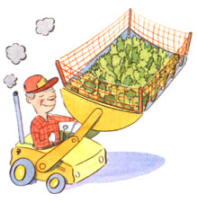

LAST LAUGH
Marv, who runs a trailer Park on the shores of Lake Michigan, can do just about anything with his front-loader, including gardening. His skill with heavy equipment dates back to service in World War II, when he and his fellow Sea-bees would follow our invading armed forces, and, with the help of bulldozers, plywood, and baling wire, would construct an airstrip, complete with control tower, within an hour of landing. In the old debate about form vs. function - for Marv - function wins every time. If a six-foot-diameter cable spool looks like a table, it is plumped down on the beach for the convenience of overnight campers. If tree trunks or stumps catch blowing sand and stabilize the beach, they are promptly added to our seascape. Viewed from the water, half a mile out, the beach has a certain derelict, abandoned-island charm.
Anyhow, Marv's best friend Poppa was busy spading-up an unused corner of the grounds for a vegetable garden when Marv rumbled over in the front-loader.
"Where you been?" Poppa asked.
"Down to the beach. Those wise-guy kids on their ATVs have been roaring along the shoreline, making a pest of themselves again."
"Did you talk to them?"
"Naw, I just raised a hill of sand from the lake to the bluff: Trapped them on the other side. What're you trying to do?"
"Start a garden patch."
"Well, shoot, I'll fix you up in no time." So Marv lowered his bucket and scraped the plot clean, shaving three inches below the surface. The newly scalped landscape, being near the lake, was, as you might imagine, very sandy.
"Looks pretty sandy," Poppa allowed, as he stared at the thirty by forty foot garden-to-be. "Needs some body."
"How about turkey doo?" Marv replied. "My son just got a whole truckload of turkey droppings that they used to grow mushrooms in. I can spread a layer of that stuff over your patch and you won't have to dig or nothin'."
Soon, there was powerful stench coming from the vegetable plot-to-be as Marv trundled back and forth with the front loader maw dribbling black, smelly compost. The thought crossed his mind to scoop up a load, fill it with petunias and park the machine next to the trailer park entrance. It would have been no worse than some bathtub-planters he had seen. Naw, he decided, he needed the machine for other things.
"Great stuff," Marv shouted over the roar of the machine.
"Yeah. I keep thinking of the turkeys behind all this. You know, maybe we should plant sweet potatoes. Sweet potatoes go good with turkey."
"What about fertilizer?" Marv asked.
"Probably wouldn't hurt."
"Hey, I know," Marv offered. "Fish make good fertilizer and the beach is loaded with dead Alewives. I'll just go down and get us a couple of loads."
Before long, the vegetable plot was knee deep in sand, fish and fowl droppings. And it needed a fence.
"Gotta keep the deer out," Poppa said. "Let's get some steel fence posts, a ladder, and a sledge hammer."
"Naw, I got a better idea," Marv announced calmly.
Soon the front-loader bucket was resting on top of a fence post held upright by Poppa. Marv engaged the hydraulics to lower the front bucket, and the post slowly sank a into the sandy soil. After staking out the ground, Poppa eased onto the lip of the loader bucket and rode to the utility shed to load up rolls of old snow-fencing.
About the time Poppa and Marv began stretching fence around the perimeter of the plot, Marv's son Heff (short for Heffner, named after an idol from his father's salad days) asked if he could use the front-loader to get some evergreens from a neighbor.
"They said I could clear out the last of their Christmas trees. We could use a nice screen along one side of the property," Heff explained. He, it appeared, believed in form as much as function.
Twenty minutes later, he roared by with four Christmas trees riding in the front bucket, root-balls and all. He downloaded the trees along the property line and took off for more. Five trips later he had a formidable row of evergreens waiting for final planting. First, he gouged a shallow trench along one side of the trees. Then he went around behind to ease them in. Mass transplanting. The apple didn't fall far from Marv's tree.
"Got the seeds?" Marv asked as soon as the fencing was complete.
"Yeah, I got seeds," Poppa answered. "But we got no gate to get in," he added as they both stared at the perfectly sealed-off garden-to-be.
"Hmmm," Marv said.
"...and even if we did have a gate, I don't want to walk around in that stuff."
"Hmmm," Marv said as he engaged his can-do ingenuity. "Hop on," he shouted.
Poppa stood on the lip of the bucket and Marv slowly elevated Poppa like a circus elephant lifting a lovely young lady in tights. Except Poppa was hanging on with two hands as Marv carefully extended him over the fence and out over the garden so he could cast his salad-garden seeds far and wide. No neat rows of lettuce, carrots, and radishes for these guys. Apparently, they decided that if this was going to be a salad garden, it might as well grow like one: mixed.
|
 |
|
|